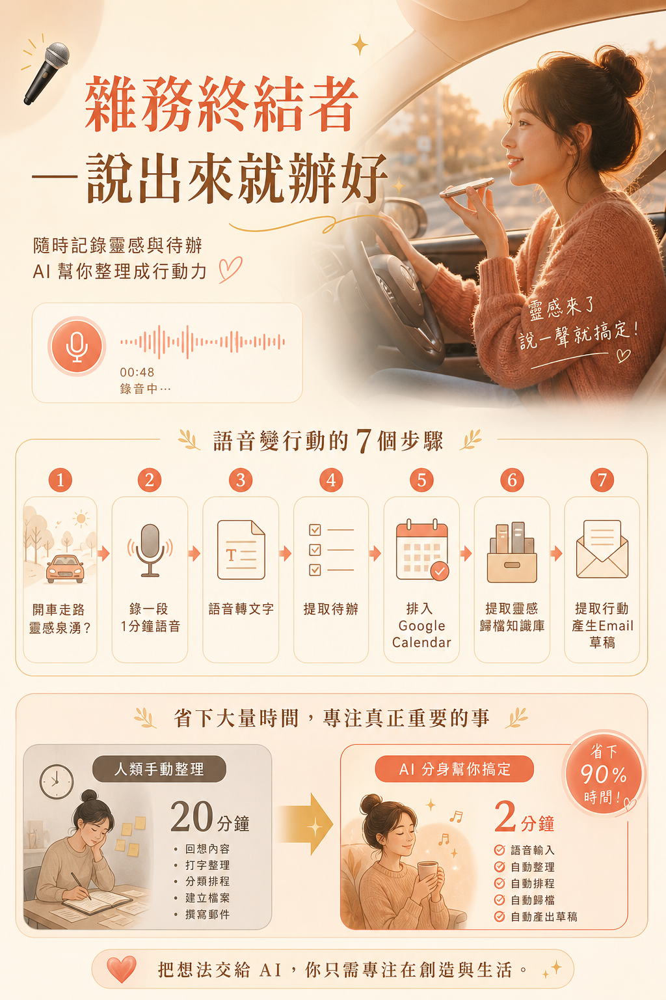
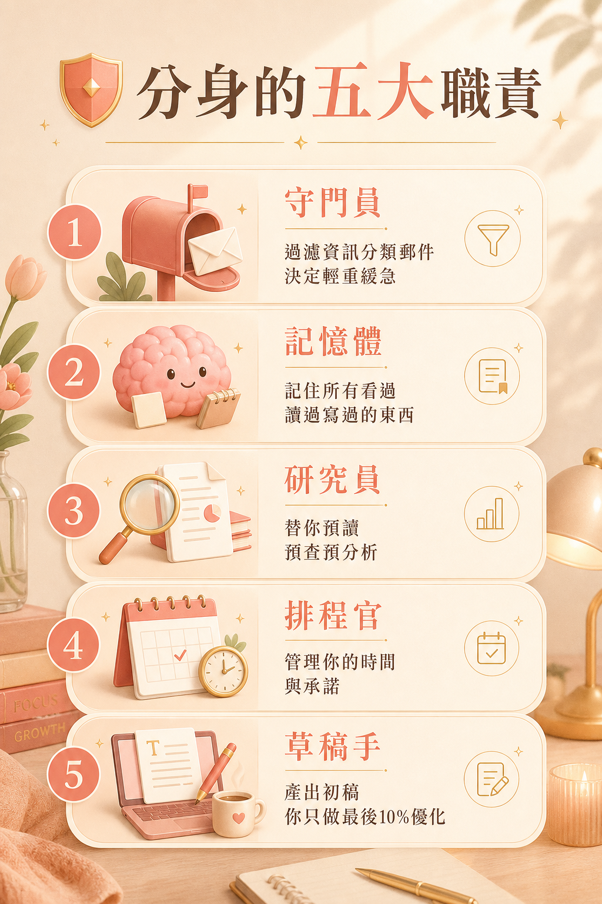
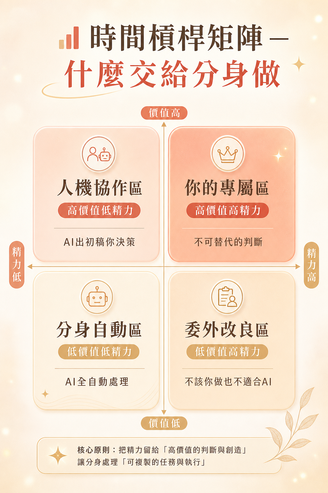
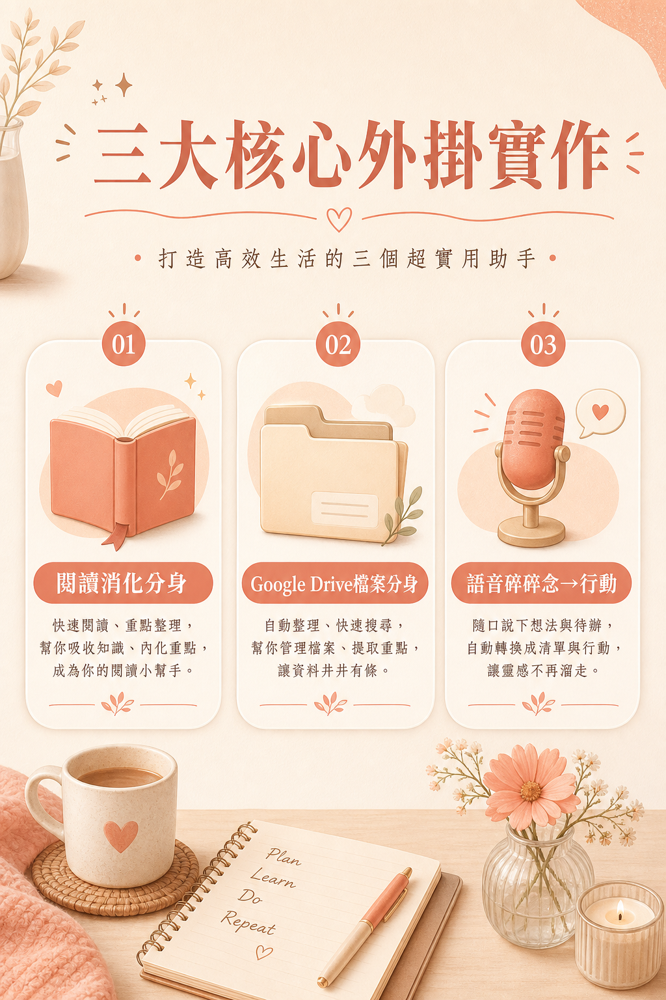
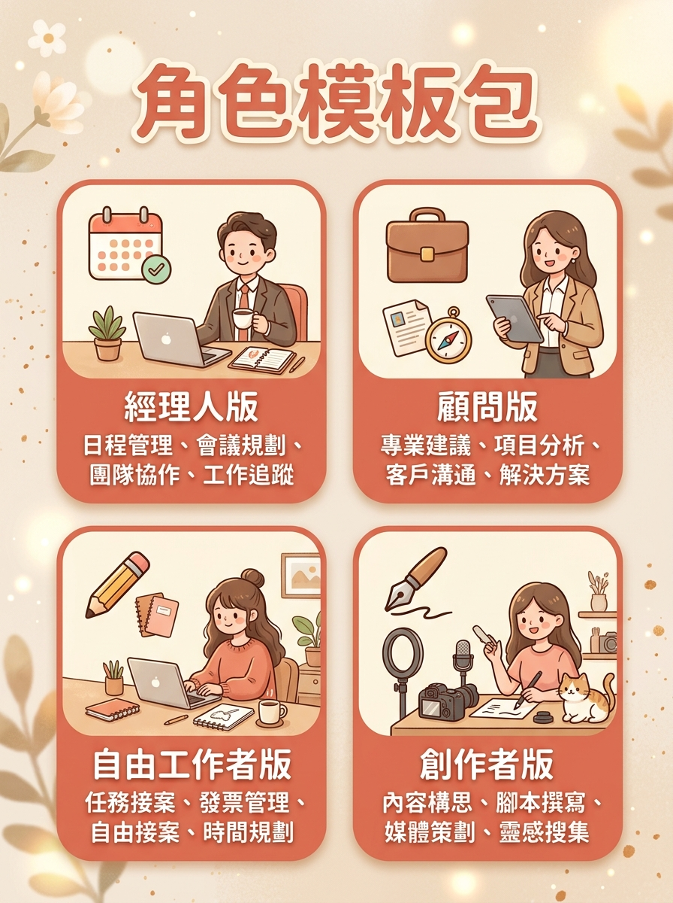
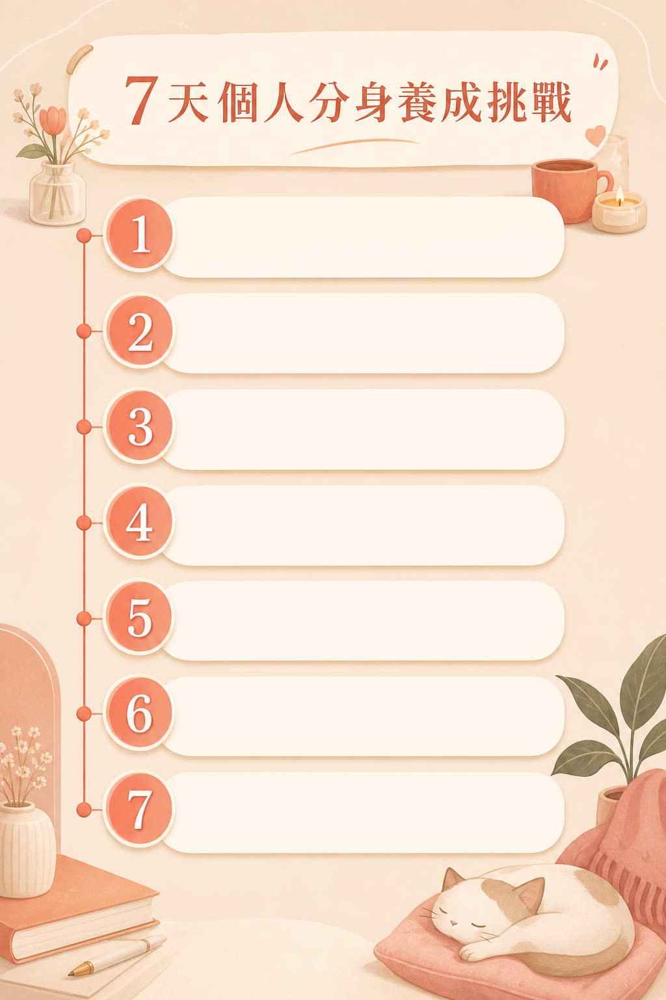
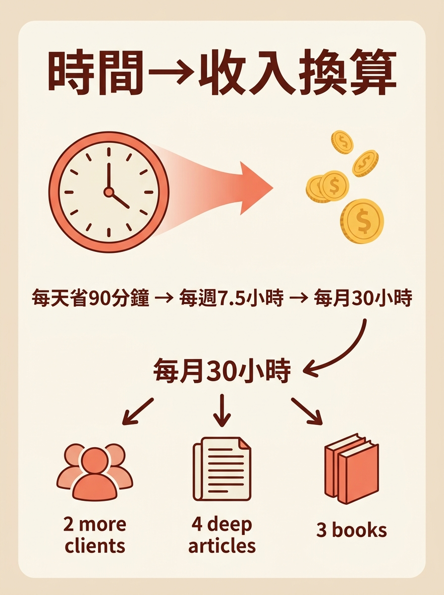

設定觸發
Cron Job，每天早上 08:30 自動執行
🌅 一天打造你的數位分身 · 從此不再獨自工作
這不是教你「怎麼用 AI」的課。是幫你打造一個每天為你工作的數位分身。 從讀檔案、管行事曆、整理資訊、準備會議，到幫你追靈感…它就像你最強的實習生， 你只做最後 10% 的決策與靈魂注入。

三個 Demo 加起來，每天幫你省下 95 分鐘 — 這是你多出來的時間，可以多服務一位客戶、多讀一份報告、或準時下班。
核心目標：AI 分身是你的影子，不是你的靈魂。學會用主管心態帶它，不是用它取代你。

⚡ 三大鐵律（貫穿全日）
🔧 分身運作方式（生活化比喻）

核心目標：完成第一個個人化的分身 Skill — 每天早上自動幫你整理好今日重點。
🛠️ 個人助理常用工具地圖
🌅 實作步驟：你的第一個 Skill
Cron Job，每天早上 08:30 自動執行
抓今天所有行程與會議
抓未完成事項與到期日
標出需要提前準備的會議
Markdown 個人化簡報送到你手上
分身可以建議，決定權永遠在你。
核心目標：親手完成每個人的版本 — 閱讀消化、檔案搜尋、語音轉行動。

痛點：每天被資訊轟炸，存了一大堆「稍後再看」但永遠不看。
丟連結 → AI 幫你讀 → 產出摘要+重點+啟發 → 存進你的知識庫。
⏱ 人類45分鐘 → 分身30秒
痛點：「我知道我有這份資料，但我找不到。」高階知識工作者最大痛點。
用自然語言搜尋：「幫我找那篇去年的提案」「這三份有什麼差異？」
⏱ 人類找10分鐘 → 分身10秒
痛點：說得比寫得好，但語音靈感往往流失。
錄30秒語音 → 提取待辦、知識筆記、行事曆事件草稿 → 你確認後寫入。
⏱ 靈感不再流失
核心目標：學會建立多個分身協作 — 並注入你的個人風格，讓分身寫出來像「你」。
🤝 會議準備 + Follow-up 分身
① 讀行事曆會議 → ② 搜尋 Drive 相關文件 → ③ 整理對方最新動態 → ④ 回顧上次記錄 → ⑤ 產出「會議準備包」
① 讀會議逐字稿 → ② 產摘要 → ③ 列待辦 → ④ 產生 Follow-up Email 草稿 → ⑤ 更新專案筆記
🧠 記憶庫策略 — 注入你的靈魂
別人的 AI 寫出來像機器人，你的分身寫出來像「你」。

📋 個人助理配置圖 — 每位學員填寫一份具體可執行的計畫


📦 課堂發放資料
你今天帶走的不是幾個自動化技巧。
你帶走的是一個已經初步認識你、會幫你讀資料、找文件、管行程、準備會議的數位分身。
從明天開始，它會每天為你工作。
而你，可以把時間花在真正重要的事情上。
課堂結束時，你應完成：
課後 7 天追蹤指標